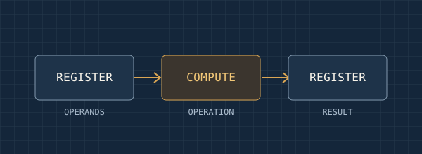
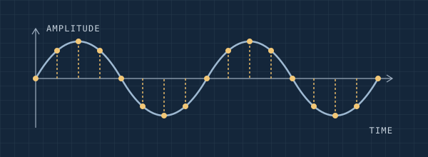
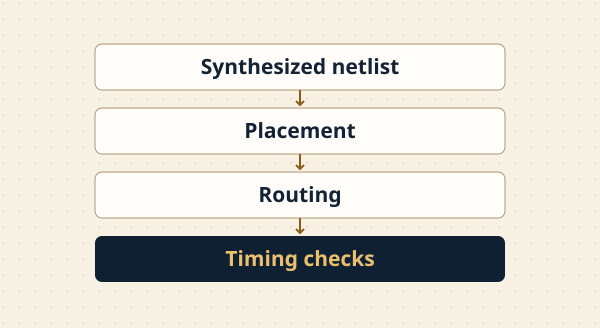

I transferred to Georgia Tech from the University of Georgia. I’m interested in digital hardware, VLSI, computer architecture, and signal processing. I’m part of the SiliconJackets Physical Design team, where I’m learning how circuit designs turn into chip layouts. My Discovery Project for ECE 1100 is a musical instrument I’ve been working on.
I started college at the University of Georgia and transferred to Georgia Tech to study computer engineering. One thing I like about the major is that I can take a question about how a computer works and follow it all the way down to the hardware. What does the system need to compute? Where is the data stored? How do the blocks that use it connect? I’m especially interested in the point where a choice that looks simple in a block diagram runs into a physical constraint.
SiliconJackets’ Physical Design team is where I’m exploring that connection outside class. I want to understand what happens after a design is described in logic, including how components are placed, how signals are routed, and how engineers tell whether the layout meets timing requirements. For example, if two blocks communicate frequently, their placement can affect the length of the wires between them. Understanding that relationship helps me see why decisions about layout can matter to the behavior of the whole system.
I also want to get better at explaining the reasoning behind a design. A diagram is most helpful to me when I can trace one input, identify where it changes, and say what I would measure at the output. That’s the kind of explanation I want to write for each project I add here, along with the questions that are still open.
The threads I’m exploring
Computing Hardware & Emerging Architectures
I’m drawn to architecture questions about where data lives and how it moves. If a processor spends much of its time waiting for data, adding more arithmetic units may leave the real bottleneck in place. CHEA is a way for me to study choices like this and learn how to evaluate them. I want to be able to point to a specific part of a design and explain how changing it would affect latency, area, or energy.

A simple datapath
Signal & Information Processing
I’m interested in how a system can turn a measurement into information it can use. Sampling and filtering raise practical questions. How often do I need to measure a signal? What part of it should a filter preserve? When I bring those questions back to hardware, I can also ask how much precision is enough and how much computation fits in the time between samples. Those connections are what make this thread a good complement to CHEA for me.

Sampling a continuous signal
Résumé
My résumé covers my education, technical experience, projects, and skills.
I want to design digital hardware and understand how architectural choices hold up in a physical implementation.
Long term, I’m interested in digital design, VLSI, and computer architecture roles. A hardware accelerator for a signal-processing task is one example of the work I’d like to explore. Before choosing an architecture, I’d want to know the required sample rate, how much data must be stored, and how much error is acceptable. Those requirements could lead to very different decisions about parallelism, memory, and numerical precision. I’d like to be able to explain those decisions and back them up with measurements.
I’m also considering a BS/MS. Before choosing that route, I want to use upper-level courses and project work to find a question I’d want to study in greater depth. I’d discuss options with an academic advisor and ask faculty how a graduate course sequence or research experience could help me pursue that question.
Coursework. Connect digital logic, architecture, and signal processing. For each new concept, sketch the data path or signal flow and work through a small example by hand.
Design practice. Build a small design with a clear specification. Test typical cases and edge cases, then document a design choice that changed after looking at the results.
Internships and research. Look for opportunities to learn how a team reviews a design, diagnoses a failure, and decides which tradeoffs are worth making.
Projects
Musical Instrument
ECE 1100 Discovery Project
The problem
I’m working on a musical instrument that uses motion as an input. The idea is to move a handheld sensor and use that movement to control sound. I started with one gesture: tilt the sensor to trigger middle C, then bring it back toward level to release the note. That gave me a test I could repeat while working on the wireless link and the note logic. It also exposed a problem that would matter with more gestures: a player should be able to move naturally without getting extra notes or leaving one stuck on.
The process
The prototype uses two ESP32-S3 boards. An ESP32-S3 Feather reads an LSM6DSOX sensor, which measures acceleration and rotation on three axes each. The Feather sends those six readings over ESP-NOW to a second board. The eventual plan is for the second board to handle gesture recognition and synthesize the sound. For this test, I used a temporary receiver and watched the note events over USB. That let me see what the gesture logic was doing before wiring it into the audio path.
Signal path used for the wireless tilt bench test
The receiver waits until the sensor is near level before it can trigger a note. It starts C4 at about +22° of tilt and releases it below about +12°. Using different angles gives me some room to move without toggling the note right at the boundary. During an early bench test, the receiver still logged extra on and off events while I repositioned the sensor. The next version required the angle to stay past a threshold for 100 milliseconds before changing the note state. If the receiver stops getting fresh packets for 500 milliseconds, it releases the note without waiting for that hold.
The outcome
The receiver got about 102–103 packets per second during the wireless test. After the 100-millisecond hold was added, the live bench log showed three tilt-and-return cycles in a row, each with one C4 note-on and one note-off. In a separate test, I unplugged the Feather while the note was active and checked that the receiver released it. When the link came back, the sensor had to return to level before another tilt could start a note.
These tests verified that a wireless gesture could reliably produce a note event on the bench. I used Codex to help write and troubleshoot the test firmware, and used the logs from the physical boards to check the behavior. The next step is to connect the events to the synth and listen for how quickly the note starts and stops. The hold helped clean up the events in the log, but I still need to find out whether the delay feels natural when playing.
SiliconJackets Physical Design
Technical note
One question I’m exploring through SiliconJackets is how an engineer can tell whether a design that works in a functional simulation will meet its clock target once implemented. In a simplified flow, placement assigns locations to cells and routing connects them with wires. The layout affects delays along signal paths, so the time available for a signal to travel from one register to the next matters alongside the logic itself.
For a future design exercise, I’d like to compare two layouts of the same small circuit with the same clock constraint. I would look at the slowest path in each and check whether the change came from the logic, the interconnect, or both. Keeping the circuit and clock constraint fixed would make the comparison easier to interpret. I’d also check whether fixing one path creates a new bottleneck somewhere else in the layout.

A simplified physical design flowA conceptual chip floorplan
A four-sample moving average
Worked example
A simple filter can take the four most recent input samples, add them, and divide by four. If the inputs are 4, 8, 4, and 0, the output is 4. When a new sample of 12 arrives, the oldest 4 drops out and the output becomes 6. That small example helps me connect the arithmetic to the registers that would store the samples and the logic that would update the result.
The four-sample window after one new input
With unsigned 8-bit samples, the largest sum is 1,020, so an exact accumulator needs 10 bits. If the output must be an integer, shifting right by two divides the sum by four and discards the remainder. Two cases I would test are four maximum inputs, which exercise the accumulator width, and a sum of 7, which makes the truncation visible. It’s a compact way to think about how a design choice affects the result a user sees.
The filter reacts gradually to a sudden change. If the input jumps from zero to twelve and stays there, the outputs step through 3, 6, 9, and 12 as the four stored samples are replaced.